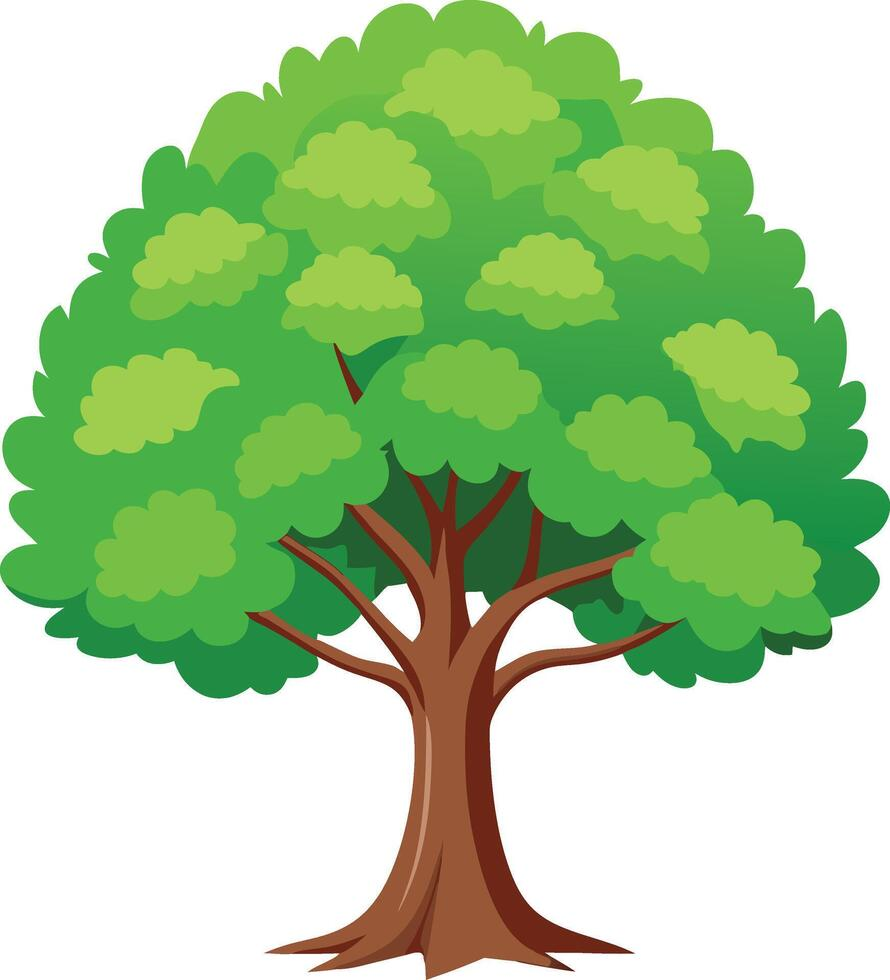

When attacked, plants can release airborne chemicals that influence nearby plants and can help them prepare defensive responses.
Plants can warn their neighbors
Some plants communicate through chemical signals.

Source: Plant ecology research